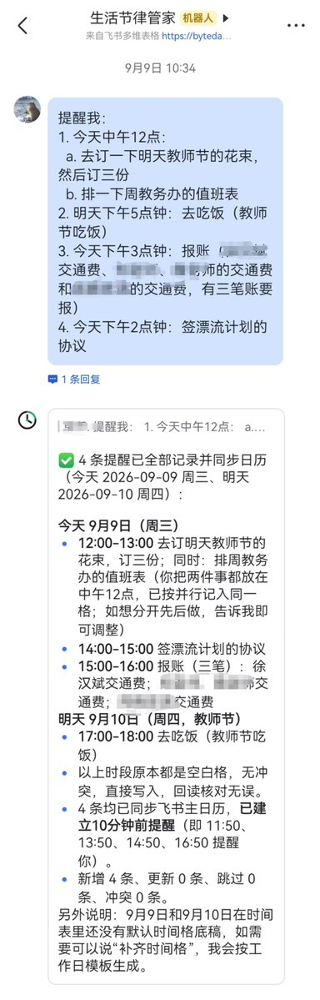
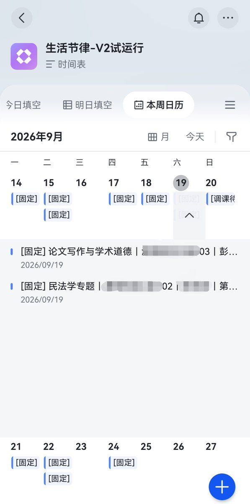

我想写一个系列，讲讲自己Token自由到底用 AI 做了些什么。
第一篇，想聊一个和每天怎么过日子有关的东西，我叫它生活节律助手，是一个基于飞书多维表格的小玩意儿。

起因是我在知乎上看到一个帖子，讨论人为什么会越来越厉害。原帖实在是找不到了，大意是，一个人把每个小时要做的事情安排好，再按照这个节律执行，慢慢就会越来越有条理。比如，下午三点做什么，四点做什么。把事情放进具体的时间里，每天照着推进，生活也就逐渐有了规律。
这个说法让我想试一试。
我让 Codex 帮我在飞书里搭了一个生活节律助手：用一个 Agent 和我对话，用多维表格呈现时间安排，再接上飞书日历做提醒。
日常我打开飞书，就能和它说话，也能直接看到自己的时间表。

我可以直接在飞书里用语音交代事情。
比如，我可以对它说：“明天下午三点到四点，安排写文章。”
这句话里已经包含了做什么、哪一天、几点开始、几点结束。助手把这些信息整理出来，写进多维表格。我不用再逐个找到单元格，把同一件事重新填一遍。
如果临时有变化，我也可以继续和它说。日程管理就变成了一个可以持续对话的过程。
多维表格在这里很有用。我说过的话，会变成看得见、查得到的安排。今天有什么事，接下来准备做什么，打开表格或日历视图就能看。
除了简单记录以外的第二个功能是提醒。
我希望安排好之后到时间自动提醒我一下，而不是我自己瞎找。
现在的做法是，具体安排同步到飞书日历，到开始之前提醒我。没有具体事情的弹性时间就留在那里，不需要每到整点都响一次。
最近让我最开心的一件事是把新学期的课表交给了它。具体就是直接把学校的秋季课表和自己的选课截图传给 Codex。它去网上检索了中南大学的校历，再结合我的课程表，把接下来几个月的上课安排逐次放进日程。
哪天有课，几点开始，在哪个教室，哪些日期放假停课，都要一起处理。后来学校发了定稿课表，我再交给它，它就继续更新。
最直接的感受就是：总算可以不用打开那些全是开屏报告的课程表 App 了。
第三个功能，是存档
我希望过一段时间再问“上周都安排了什么”“某一天的时间是怎么分配的”，能够找到记录。目前，过去的安排已经可以在多维表格的日历视图里按日期查看，记录的修改过程也能追溯。
为什么要当领导？因为领导是真的爽啊，有秘书来操心一切。说实话我上个月月末才开发出这个东西，但现在每天使用频率非常高，的确是非常好用。